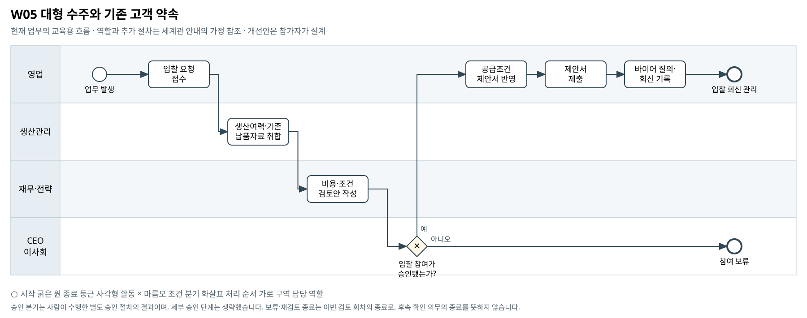

대형 수주와 기존 고객 약속
새 입찰 기회를 검토할 때 기존 고객에게 한 납품 약속과 생산 여력을 어떻게 함께 확인하는가?
BPMN 2.0 편집 원본 · 도식 크게 보기 · 8개 도식집 PDF


승인 분기는 사람이 수행한 별도 승인 절차의 결과이며, 세부 승인 단계는 생략했습니다. 보류·재검토 종료는 이번 검토 회차의 종료로, 후속 확인 의무의 종료를 뜻하지 않습니다.
기존 자료의 단초
- C-201 입찰은 기초·더마 제품을 요구하며 USD 결제, 납기 지연 페널티, 회수 비용 공급자 부담 조건이 제시돼 있다.
- RFP는 입찰 마감까지 3주라고 설명한다. 이를 최초 납품기한과 동일하게 해석할 근거는 없다.
- 더마 물량은 라인 단위 생산 여력을 봐야 하며 증설·전환 검토 자료가 있다.
- 입찰 참여·투자 승인은 CEO/이사회 권한이다. 기존 고객 C-101의 수주 감소와 정상 출하 보고는 서로 다른 시점 지표다.
주최 측의 교육용 업무 가정
- [교육용 가정] 영업이 RFP를 접수하고 생산·재무가 자료를 모아 승인 검토 후 제안서 제출·후속 회신을 관리하는 현재 흐름을 표현한다.
- [교육용 가정] 승인 후 정리하는 '공급조건'은 입찰 제안의 조건이다. 실제 수주 확정이나 고객별 납기 변경을 의미하지 않는다.
- [범위] 모든 기존 고객의 약속을 지켰다고 전제하지 않으며 수주·증설·고객 우선순위의 정답도 정하지 않는다. 여기 나열한 보완 항목은 선택 예시다. 필수 확장과 다른 부서 영향의 기준은 A01을 따른다.
미해결 지점
- 입찰 최초·분할 납품일과 기존 주문별 확정 납기·수량의 충분한 대응표가 없다.
- 라인별 생산계획, 전환·셋업 시간, 자재 가용일이 없다.
- 기존 고객 약속 변경에 대한 고객 동의·영업 승인 이력이 없다.
확장할 때 생각할 질문
- 매출 기회보다 먼저 확인해야 할 공급 약속은 무엇인가?
- 입찰 마감일과 납품일을 분리하면 필요한 판단이 어떻게 달라지는가?
- 기존 주문과 새 제안의 충돌을 어떤 범위에서 확인할 것인가?
보완할 수 있는 데이터
- 기존 고객 납품 약속·변경 이력
- 입찰 초도·분할 납품 조건과 바이어 질의 회신
- 라인별 주간 생산계획과 자재 가용일
관련 원본 자료
- 00_common/Business_Process_Map.md
- 00_common/data_dictionary.md
- 00_common/approval_authority_policy.md
- 01_corevia/docs/rfp_c201.md
- 01_corevia/production/strat_capacity_cv.csv
- 01_corevia/production/strat_capex_plan_cv.csv
- 01_corevia/sales/sales_orders_cv.csv
- 01_corevia/sales/sales_shipments_cv.csv
- 01_corevia/sales/sales_meeting_notes_cv.md
- 01_corevia/financials/sales_memo_cv.md
그림의 관계가 원본 파일의 모든 연결키 제공을 뜻하지는 않습니다. 원본에서 확인한 관계와 추가한 매핑·가정을 구분하십시오.